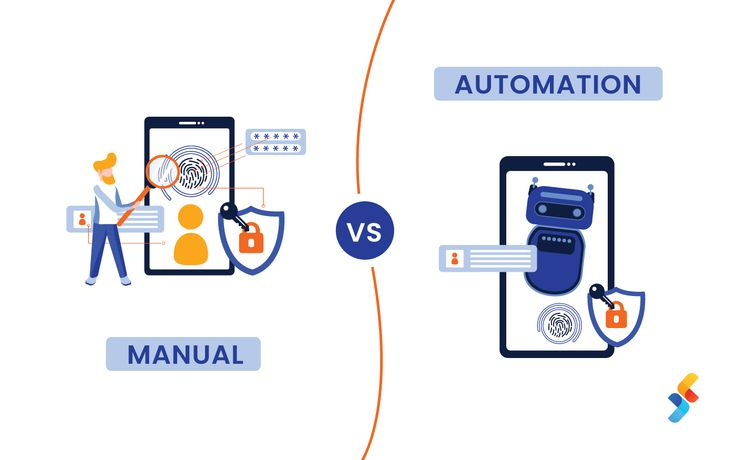

In 2026, artificial intelligence (AI) in software development is no longer futuristic—it’s essential.
From automating repetitive coding tasks to enhancing testing, deployment, and project management, AI is reshaping how software is built.
Developers, project managers, and businesses leveraging AI-driven tools are seeing:
- Faster delivery times
- Higher-quality applications
- Smarter workflows
At BM TECHX, we track these trends and explore how AI is transforming software development, helping businesses stay competitive in a tech-driven world.
AI Code Generation in Software Development

AI tools are revolutionizing code generation. Platforms like GitHub Copilot and other AI-powered coding solutions can now:
- Writing entire functions automatically
- Suggesting code improvements
- Debugging applications
Benefits of AI Code Generation
- Less time spent on repetitive tasks
- Focus on innovative problem-solving
- Faster prototyping and fewer errors
- Streamlined collaboration between developers and AI
AI-Driven Testing & QA in 2026

Testing is a critical stage of software development, and AI is making it more efficient and precise.
AI-powered software testing solutions can:
- Predict potential bugs
- Run automated regression tests
- Simulate user behavior to catch issues early
Benefits of AI Testing
- Reduced human error
- Shorter testing cycles
- Higher-quality, reliable software
Predictive AI for Software Maintenance
AI is transforming software maintenance and monitoring through predictive analytics.
It allows developers to use predictive maintenance solutions to:
- Forecast system failures before they occur
- Detect anomalies in real-time
- Recommend preventive maintenance
Why Predictive AI Matters
- Avoid costly downtime
- Maintain consistent software performance
- Deliver seamless user experiences
AI for Project Management & Workflow Optimization
Beyond coding and testing, AI is enhancing project Management.
AI tools can:
- Analyze team productivity
- Predict task completion times
- Optimize workflows automatically
Key Advantages
- Better resource allocation
- Identification of bottlenecks
- Improved team collaboration
- Developers can focus on innovation
Workflow automation powered by AI makes teams efficient and agile.
AI-Powered Personalized Software Solutions

AI enables personalized user experiences in software applications.
By analyzing user behavior, AI can:
- Adapt software to individual preferences
- Suggest relevant features
- Provide intelligent recommendations
Impact on Users
- Improved engagement
- Higher satisfaction
- Better retention
Ethical & Responsible AI in Software Development
With AI becoming more integrated, responsible AI development is crucial to ensure fairness, transparency, and trust in software systems.
Developers must ensure AI:
- Avoids bias
- Protects user data
- Follows ethical guidelines
Why Responsible AI is Important
- Builds user trust
- Ensures regulatory compliance
- Provides a competitive edge
Balancing innovation with ethics will define credible AI-powered software in 2026.
Future AI Trends in Software Development 2026
AI will continue to redefine software development.
Key trends include:
- Automating complex coding tasks
- Low-code and no-code AI development platforms
- Integrating AI into DevOps pipelines
- Enhancing cybersecurity with AI threat detection
Conclusion
AI is transforming software development in 2026. From code generation and testing to predictive maintenance and workflow optimization, it enables developers to build smarter, faster, and more reliable software.
At BM TECHX, we help businesses harness AI’s full potential for innovation, efficiency, and growth.
Frequently Asked Questions
AI automates coding, testing, maintenance, and workflows, helping teams build software faster and more efficiently.
They are tools that assist developers by generating code, fixing errors, and improving productivity using AI.
AI detects bugs early, runs automated tests, and improves software quality with less manual effort.
Yes, AI speeds up coding, testing, and deployment, significantly reducing overall development cycles.
When used responsibly, AI follows ethical standards, protects data, and ensures secure development practices.
No. AI supports developers by handling repetitive tasks, allowing them to focus on innovation and problem-solving.